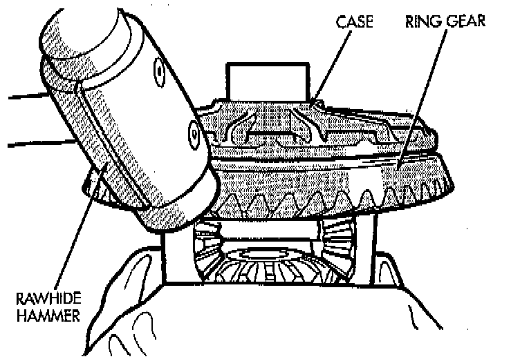
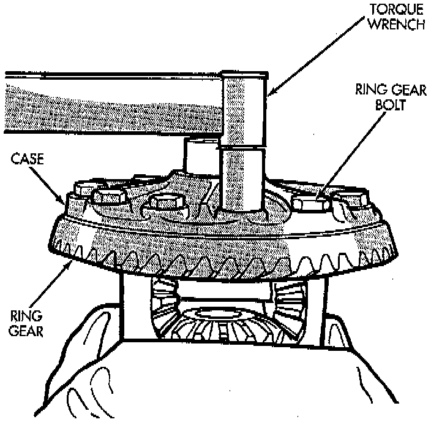

Front Differential
NOTE: The ring and pinion gears are service in a matched set. Do not replace the ring gear without replacing the pinion gear.
REMOVAL
1. Remove differential from axle housing.
2. Place differential case in a suitable vise with soft metal jaw protectors.
3. Remove bolts holding ring gear to differential case.
4. Using a soft hammer, drive ring gear from differential case.
CAUTION: Do not reuse the bolts that held the ring gear to the differential case. The bolts can fracture causing extensive damage.

INSTALLATION
1. Invert the differential case and start two ring gear bolts. This will provide case-to-ring gear bolt hole alignment.
2. Invert the differential case in the vise.
3. Install new ring gear bolts and alternately tighten to 95 - 122 Nm (70 - 90 ft. lbs.) torque.
4. Install differential in axle housing and verify differential side bearing preload, gear mesh, and contact pattern.